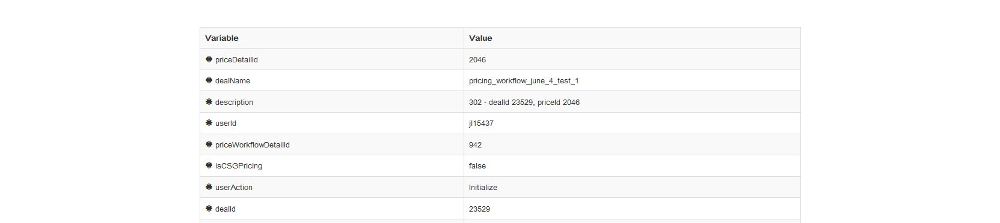

JBPM Process Management
Demonstration of Work Done during Summer Internship at
CTC, Pune
By : Sachin Chopra
Team
CCC - The community lending and investing group of Citi
Citi Community Capital
- Offers the industry’s most comprehensive affordable housing and community development financial products
- From single project transaction to portfolio wide solutions
- Combines community development expertise with capital markets capabilities to offer financial solutions that build stronger communities.
In CCC, bankers use an application called DealTrax for making deals.
Helps in various stage of deals: from initial proposal to final lending.
DealTrax :
Comparison :
JBPM
An Open Source BPM SystemAbout
- jBPM is a flexible Business Process Management (BPM) System.
- Allows you to model your business goals by describing the steps that need to be executed, using a flow chart.
Advantages
- Open Source, Light-weight, Extensible Workflow engine written in pure Java
- Supports latest BPMN 2.0 specification.
A sample JBPM Process (using BPMN 2.0)
- JBPM is being used to replace OBPM in Dealtrax Application used by Municipals team.
- The Workflows, initially in OBPM are being re-written in JBPM
- This offers :
- cost benefit as the JBPM is open source application
- extensive features.
Issue :
Monitoring
Allows process analysts to detect -
- Discrepancies between the actual process execution and the a priori model
- Analyze bottlenecks
- Reduce cycle time, defect rate and increase productivity.
- Potential opportunities for cost savings or other improvements
Need a console to monitor various jBPM instances.
- Should help in identifying stalled processes.
- To identify the state of any process instance.
- To identify which user group has most pending tasks
Solutions :
KIE Console
- Can only work with Git based repositories.
- Can only monitor Workflows deployed using it.
- Limitations in deploying WARs (Web Application Archives).
- Limited support for Weblogic server deployment .
Develop a Custom Console
- Will fulfill our immediate needs.
- Can be easily extended to support our future needs.
- Would be compliant with different architectures thus, can be used across teams.
Problem Description
Generic jBPM monitoring Dashboard for admin and support users.
Tools and Technologies Used :
Google Web Toolkit 2.6
Bootstrap
Java
SonarQube 4.5LTS
SQL Server
HTML / CSS
JBPM
Weblogic
Application Developed :
JBPM DashBoard
- Features :
- Shows all the processes running on the server.
- Can select any particular instance of a process.
- View
- status of the instance
- who it is assigned to
- start and stop dates. etc.
- See the values associated with a process.
- Terminate a stalled process.
Process Definitions
List of all the Workflows running on the system
- Shows the count of running instances of each process.
- Displays a graphical representation of the same.
Process Instances
List of all the Instances for Selected Workflow
- Various filters to let you quickly select required instance
- Gives an overview regarding various instances of that process

Instance Details
Details about the selected Instance
- Shows various Tasks which were executed while process instance was running.
- The values which were set for variables while instance was running.
- An option to terminate an instance (ex. if it is stalled).

Configurable
Configuration File to make Dashboard generic and deployable across different architectures.
Following Configurations are possible :
- Choice of Database.
- Option to include a column from front end application.
Results
- A generic Dashboard for monitoring and managing JBPM Workflows.
- Ability to link to columns from GUI for enhanced management.
- Minimal dependencies and configurations to make deployment very fast and simple.
The JBPM Console was presented to :
and their valuable suggestions were accommodated.
Quality of Code
- Low Technical debt : 2.0 %
- SQALE Rating - A
- Blocker Issues : 0
- Critical Issues : 0
Possible Extensions
- More JBPM API Calls can be added as per need.
- Any existing web service can be consumed.
- For Example :
- Start Service
- Delegate Task etc.
- Integration with SSO.
Learning Outcome
- Professional
- Understanding different phases of SDLC like requirements, designing, coding, testing, deployment for real world applications.
- Exposure to diverse technology and tools.
- Interaction with some very talented and experienced Developers.
- Personal
- Getting an insight into the norms and conventions of a huge corporation like CITI
- Values of teamwork and synergy.
- Working and interacting with veterans provided immense learning opportunities.
Thank You !
Appendix
q1=select t1.processId, count, processName
from ( select processId, count(processId) AS count from ProcessInstanceLog where status = 1 group by processId ) t1
Inner Join (select distinct processId , processName from ProcessInstanceLog where status = 1 ) t2
ON t1.processId = t2.processId;
q2=Select ProcessInstanceLog.processInstanceId, ProcessInstanceLog.processId, start_date, end_date, user_identity, outcome, processInstanceDescription, processName, ProcessInstanceLog.status , PeopleAssignments_PotOwners.entity_id, subject, Task.name
from (dbo.ProcessInstanceLog LEFT JOIN dbo.Task
ON (dbo.Task.processInstanceId = dbo.ProcessInstanceLog.processInstanceId AND Task.status != 'Completed')
LEFT JOIN dbo.PeopleAssignments_PotOwners ON PeopleAssignments_PotOwners.task_id = Task.id)
WHERE ProcessInstanceLog.processId='"+defn.getProcessId()+"'
order by processInstanceId desc;
q3=select variableId, value from dbo.VariableInstanceLog where processInstanceId=
Software Design Approach : MVP Pattern
Timeline
SQALE
(Software Quality Assessment based on Lifecycle Expectations)
- What is the quality of the source code delivered by the developers?
- Is the code changeable, maintainable, portable, reusable?
- What is the design debt stored up by the project?